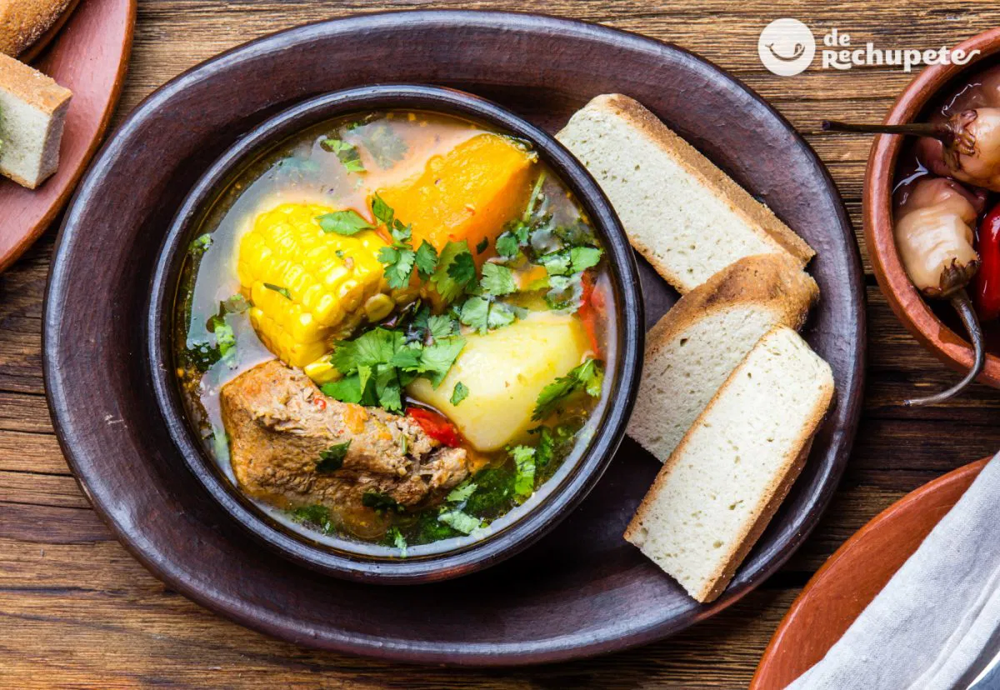

Cazuela de Gallina

La cazuela es un plato típico en las gastronomías principalmente Chilenas y Peruanas. Recibe este nombre por el tipo de recipiente en que esta cocinado, que suele ser una vasija de la familia de las ollas.
Nos concentraremos en la receta de cazuela chilena o como se prepara tradicionalmente en chile.
Ingredientes:
- 4 presas de gallina o pollo
- 200 gr de zapallo
- 1 zanahoria
- 1/2 de cebolla
- 1/2 de locote rojo
- 60 gr de arroz
- 1 vara de apio
- 60 gr de poroto verde
- 4 papas
- 4 trozos de choclo entero (mazorca)
- 1 cubo de caldo de gallina
- Pimienta negra molida
- Oregano fresco
- Sal
- 1 diente de ajo
- 1 atado de cilantro
Instrucciones:
- En una olla caliente, poner una lamina de aceite y sofreír las piezas de gallina o pollo.
- Luego, agregar la cebolla picada en pluma, el ajo picado en cuadros pequeños (brunoise) y la zanahoria, el locote y los porotos verdes en tiras delgadas (julianna).
- Condimentar y agregar la vara de apio y agua caliente hasta que cubra el pollo.
- Dejar cocer por 20 minutos.
- Pasado los 20 minutos, agregar las papas y el arroz y dejar hervir por 10 minutos mas.
- Por ultimo, agregar el zapallo y el choclo, dejar hervir otros 10 minutos.
- Rectificar el sabor, agregar mas sal o pimienta a gusto y apague el fuego.
- Servir caliente con cilantro picado finamente encima.
